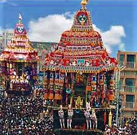
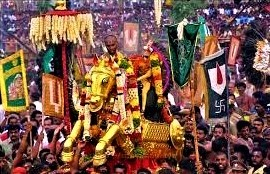

MAJOR FESTIVALS OF MADURAI
CHITHIRAI THIRUVIZHA
Chithirai Festival, also known as Chithirai Thiruvizha, Meenakshi Kalyanam or Meenakshi Thirukalyanam, is an annual Tamil Hindu celebration in the city of Madurai during the month of April.The festival, celebrated during the Tamil month of Chithirai, is associated with the Meenakshi Temple, dedicated to the goddess Meenakshi, a form of Parvati and her consort Sundareshwar, a form of Shiva. The festival lasts for one month. The first 15 days mark the celebrations of the coronation of Meenakshi as the divine ruler of Madurai and her marriage to Sundareshwar. The next 15 days mark the celebrations of the journey of Kallalagar or Alagar (a form of the god Vishnu) from his temple in Alagar Koyil to Madurai. The events unfold as:
Yetram : The chief priest of Meenakshi temple hoists the Holy flag on the KodiMaram (Flag post) of the temple declaring the opening of the month long celebration.
Pattabisekam: The coronation ceremony when Meenakshi is crowned as queen of Madurai and rules the Pandya Kingdom for the next four months. Lord Sunderaswarar, her husband will be crowned as king for the next eight months.
Dikvijayam : The warrior Princess goes to war and conquers the world.She falls in love with Lord Shiva when she goes to Kailaayam – The Place of Lord Shiva in the Himalayas.
Meenakshi Tirukalyanam : The traditional wedding of Meenakshi amman and Lord Shiva is celebrated in opulent style and grandeur.
Ther Thiruvizha : The procession after the wedding, when the King and Queen of Pandya Kingdom Lord Sunderaswarar and Meenakshi come to see their citizens in a beautifully decorated chariot.
Ethir Sevai: When Alagar enters Madurai city and the people of the city welcome him.
Alagar Vaigai Eluntharulal: Lord Alagar reaches the wedding of his sister a day later.This takes place in a mandapam in the middle of river Vaigai.